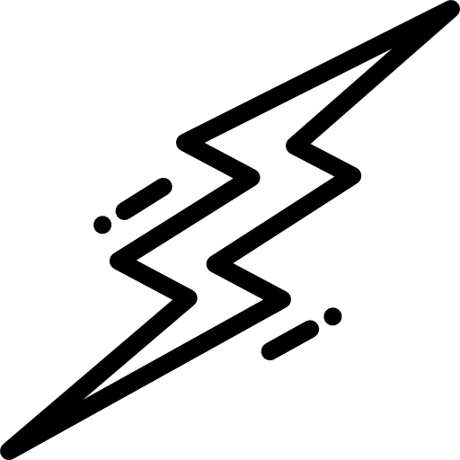

Are you...?
O R A N G E
Witty...Charming...Spontaneous?
Impulsive...Generous...Impactful?
Optimistic...Eager...Bold?
Physical...Immediate...Courageous?
At school...I learn by doing and experiencing, rather than by listening and reading. I like being physically involved in the learning process and am motivated by my own natural competitive self and sense of fun. Iam a natural performer. I like doing tasks that allow me to be independent and free.